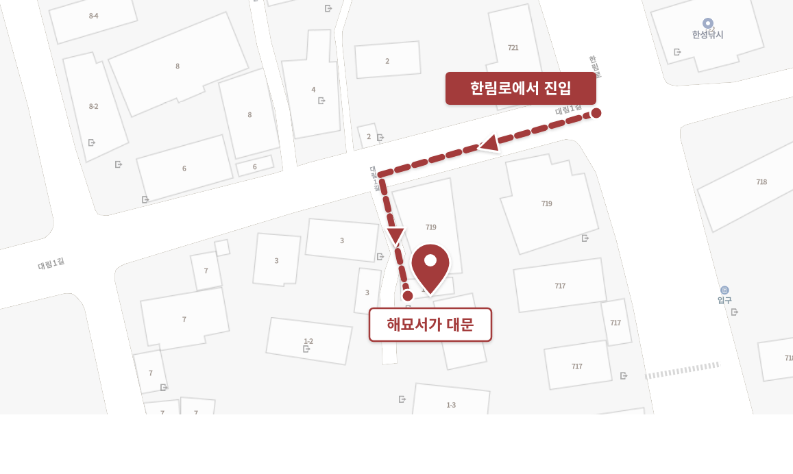

Welcome 해묘서가에 오신 것을 환영합니다
해묘(海猫) · 바다의 고양이, 갈매기를 부르는 또 다른 이름.
한림항 앞 좁은 골목 안에 자리한 작은 책방.
갈매기처럼 잠시 내려앉아, 책장과 바다 사이에서 며칠 머무시기를.
TV 없이, 책과 음악과 파도 소리만 남는 밤을 권합니다.
Haemyo (海猫) · "sea cat" — another name for the seagull.
A small bookstay tucked into an alley by Hallim Port.
Settle here the way a gull settles, briefly, between the shelves and the sea —
a TV-free night, with only books, music, and the sound of waves.
주소 · 제주특별자치도 제주시 한림읍 대림1길 1-1
Address · 1-1 Daerim 1-gil, Hallim-eup, Jeju-si, Jeju-do

※ 대림1길은 좁은 골목입니다. 한림로에서 대림1길 표지판을 보고 진입한 뒤, 골목 안쪽 1-1번지까지 천천히 들어오시면 우측에 해묘서가가 있습니다.
Note · Daerim 1-gil is a narrow alley. Once you turn from Hallim-ro, walk slowly into the alley to building 1-1 — Haemyo is on your right.
WiFi 와이파이
- 네트워크Network
fanta- 비밀번호Password
12121212
QR을 카메라로 스캔하면 자동 연결됩니다. Scan the QR with your camera to connect automatically.
Room audio · Marshall Acton III 스피커 사용법
- 전원 · 상단 우측 토글을 위로 ↑
- 페어링 · SOURCE 버튼을 길게 눌러 BT LED가 빨간색으로 깜박일 때까지
- 연결 · 휴대폰 블루투스에서
ACTON III선택 - Power · Flip the right toggle up ↑
- Pair · Hold SOURCE until the BT LED pulses red
- Connect · Select
ACTON IIIin your phone's Bluetooth settings
※ 음량은 왼쪽 노브로 조절합니다. BASS·TREBLE의 빨간 점이 12시일 때가 기본 음질입니다. ※ Volume is the leftmost knob. Default tone is when the BASS·TREBLE red dots align at 12 o'clock.
The shelves 서가
신간을 중심으로 큐레이션한 책장입니다. 권 수는 넉넉하니 천천히 둘러보고 마음에 드는 책을 자유롭게 꺼내 읽어주세요. 읽으신 책은 제자리에 꽂아주시면 다음 손님께도 같은 풍경이 됩니다.
※ 임시 안내 문구입니다 — 호스트가 직접 다듬어주세요
A curated shelf focused on recent titles, with plenty to choose from. Take your time, pull anything that catches your eye, and please return the book to its spot so the next guest meets the same shelf.
※ Placeholder copy — host to revise
Books & culture 책·문화 공간
- 달리책방 · 한림의 독립서점
- 파출소 옆 책방 · 다정한 동네책방
- 한림공원 · 아열대 식물원·동굴
- 비양도 · 한림항에서 도선 15분
- Dali Bookshop · Hallim indie shop
- Bookshop next to the police box
- Hallim Park · subtropical gardens, caves
- Biyang-do · 15-min ferry from Hallim
Beaches & outdoors 바다와 산책
- 협재해수욕장 · 에메랄드빛 모래사장
- 금능해수욕장 · 한적한 분위기
- 곽지해수욕장 · 노을 명소
- 한림항 방파제 · 도보1분, 아침 산책
- Hyeopjae Beach · emerald shallows
- Geumneung Beach · peaceful vibe
- Gwakji Beach · sunsets
- Hallim Port breakwater · 1-min walk, sunrise
Walking distance 도보권 맛집
- 롯타이 · 태국인 셰프 직접 요리
- 옥만이네 · 갈비찜·반찬
- 최정가네 칼국수 · 보말칼국수
- 도담한식 · 정갈한 한식 한 상
- 수제옛날통닭 · 맥주와 함께하는 야식
- Rot Thai · cooked by Thai chef
- Okmanine · braised ribs
- Choijeong-ga Kalguksu · bomal noodles
- Dodam Hansik · Korean set
- Sujae Old-style Fried Chicken · with beer
A short drive away 차로 한 잔
- 회나루 · 회·한치물회
- 수우동 · 우동·튀김
- 한림칼국수 · 보말칼국수
- 호텔샌드 · 협재 해변 카페
- Hoenaru · sashimi
- Suudon · udon
- Hallim Kalguksu · bomal noodles
- Hotel Sand · beach cafe
※ 호스트가 즐겨 찾는 곳 위주로 정리했습니다. 영업시간·휴무일은 방문 전 확인 부탁드립니다. ※ Host's personal favorites — please check hours and closing days before visiting.